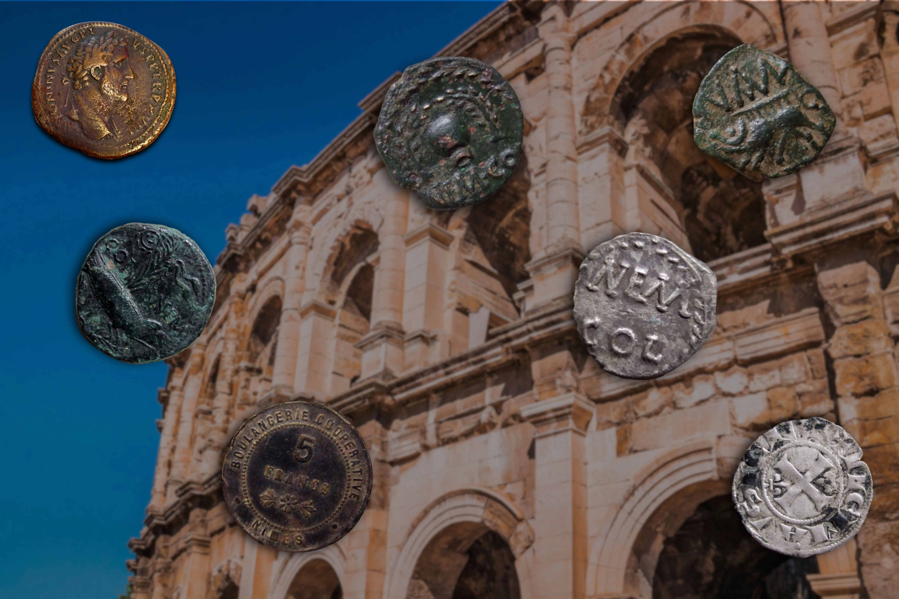

Qui sommes nous ?
Du club au cercle numismatique !
Anciennement Club Numismatique Nîmois, l'association est devenue le Cercle Numismatique de Nîmes en 2022. Depuis une conférence mémorable sur "L'As de Nîmes" organisée en 2024 à l'auditorium du Musée de la Romanité, une nouvelle dynamique s'est mise en place au sein du Cercle. Le nombre d'adhérents a depuis fortement augmenté et la participation aux réunions mensuelles est en forte progression.

Organisation des réunions
Les réunions du Cercle Numismatique de Nîmes ont généralement lieux le premier vendredi de chaque mois. Elles se tiennent à l'adresse de la Banque Populaire du Sud au 6 Rue des Halles à Nîmes (30000). Les réunions mensuelles donnent l'occasion aux membres du Cercle de présenter des exposés sur des sujets variés de numismatique, à des périodes et des géographies différentes.
Les sujets de conférences de 2025
- "De l'Antoninianus à l'Aurelianus : deux noms pour une dénomination monétaire de Caracalla à Dioclétien", Laurent Schmidt
- "Tessère spintiriennes", Léo Dubal
- "Jetons, I : Du Moyen-Âge à la Renaissance", Gérard Krebs
- "Monstres et animaux fantastiques", Christophe Cheminade
- "Jetons, II : Du XVIe au XVIIIe siècle", Gérard Krebs
- "Les Assignats, chronique d'une faillite annoncée", Gérard Krebs
- "Début du monnayage islamique", Gérard Krebs
- "Sinope dans l'Antiquité", Serge Bloch
- "Monnaie Médiateur Multilingue", Léo Dubal
Nouveau bureau de l'association en 2026
Le bureau du Cercle Numismatique de Nîmes s'est vu renouvelé à l'occasion d'un vote lors de l'assemblée générale de l'association en date du 13 février 2026. La liste du nouveau bureau élu est exposée ci-dessous.
- Président : Gérard Krebs
- Vice-président : Christophe Cheminade
- Trésorier : François Lozanne
- Secrétaire : Jules Baud